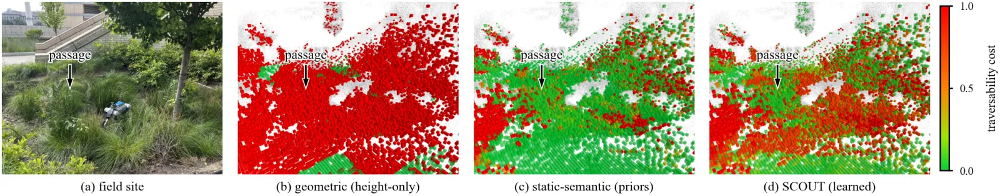
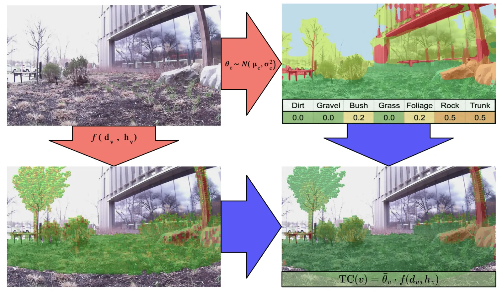
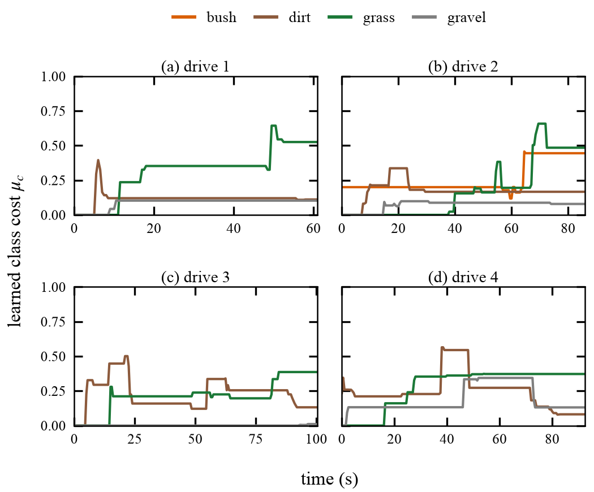
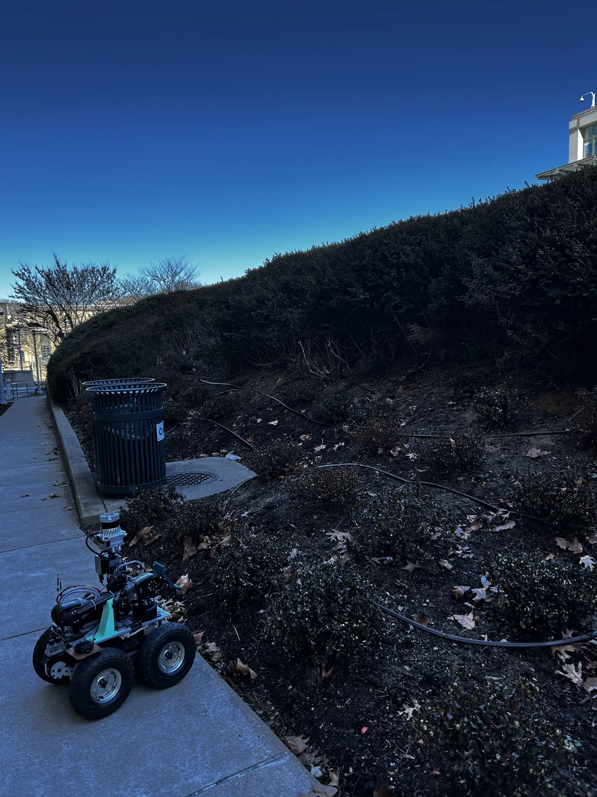
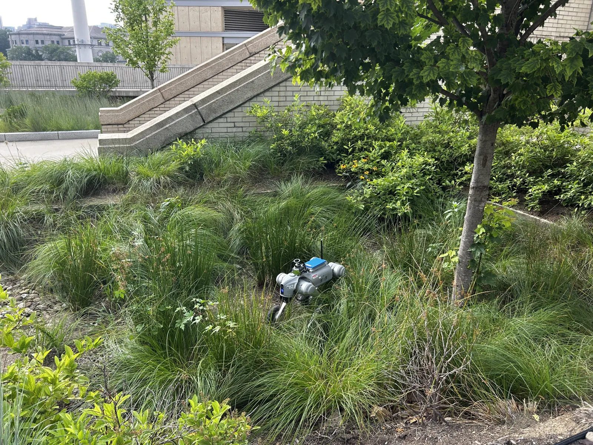

SCOUT: Semantic Class-Specific Online Update for Traversability in Densely Vegetated Environments
Accepted to the IROS 2026 Workshop on Semantic-Aware Mapping and Navigation (SeMaNa).
Exteroceptive sensing alone can't separate traversable vegetation from rigid obstacles, and proprioception-fused methods need hours of environment-specific pretraining. SCOUT adapts in the field instead: every terrain and obstacle class is assigned a belief of its traversability, and interaction with the environment continuously refines the belief so the robot learns to drive efficiently in real time.
Download Paper: PDF
Workshop: SeMaNa @ IROS 2026
The problem
Autonomous navigation has matured in structured urban environments, but urban land covers less than 1% of the Earth's surface. In unstructured, vegetated terrain, robots still can't tell traversable vegetation from rigid obstacles. A LiDAR point cloud of tall grass looks just like one of a boulder, so the planner goes around both.
Simon is a Unitree Go2-W wheeled quadruped built to drive through that vegetation instead of around it. Its navigation stack, SCOUT, fuses 2D camera semantics and 3D LiDAR geometry with proprioceptive feedback, so it learns what each type of vegetation actually costs to drive through.

The same drive under three cost maps, from green (easy) to red (difficult). (a) The field site: tall grass and brush. (b) A height-only baseline marks everything taller than the wheel radius as difficult, 82.8% of the map. (c) Static priors give all vegetation one predefined cost. (d) SCOUT learns a cost for each class from how the robot actually drove, and picks out the thinner passage as a lower-cost route.

How it works
LiDAR scans, registered with FAST-LIO2, build a 3D voxel map. Each point is projected into a DDRNet segmentation mask and votes its semantic class into a voxel.
A voxel's cost is its class's traversability coefficient multiplied by a geometric potential built from its point density and its height above the ground:
TC(v) = θc · f(dv, hv)
Because every voxel of a class shares one coefficient, updating what the robot believes about grass instantly re-costs every grass voxel already in the map. Classes start optimistic (grass and dirt free, bush 0.2, rocks and trunks 0.5), so Simon tries ambiguous vegetation rather than avoiding it.
Learning from every interaction
While driving, Simon measures two signals every half second: wheel slip (wheel speed compared with the odometry's body speed) and vibration above normal driving on the IMU. Together they form a cost observation for whichever class the robot is driving through.
A recursive Bayesian (Kalman-style) update folds each observation into that class's belief. The first rough encounter moves it a lot; as evidence accumulates, the belief settles and resists one-off spikes.
Across four recorded drives, with no hand-tuning, tall grass rose to bush-level cost (0.37–0.53) while dirt stayed low (0.08–0.17). SCOUT rated 68.6% of the map as easily traversable, compared with 17.2% for the height-only baseline.



Carrying on Patrick's Mission
Building upon the foundation laid by Patrick, Simon, a legged wheeled robot, carries on Patrick's mission of autonomous environmental exploration.
Simon's added agility and capability from the legs will allow it to navigate through dense vegetation more effectively. The legged-wheeled hybrid design provides enhanced mobility compared to purely wheeled platforms, enabling traversal over obstacles and through dense vegetation while maintaining efficiency on clear terrain.
The whole stack of perception, mapping, cost updates and planning runs onboard on a Jetson Orin with a Livox MID-360 LiDAR, an RGB camera, an IMU and wheel encoders. So far SCOUT has been validated on teleoperated drives. Next up are closed-loop trials, where SCOUT's own planner drives Simon through denser vegetation.